Ekonomiese Sektore:
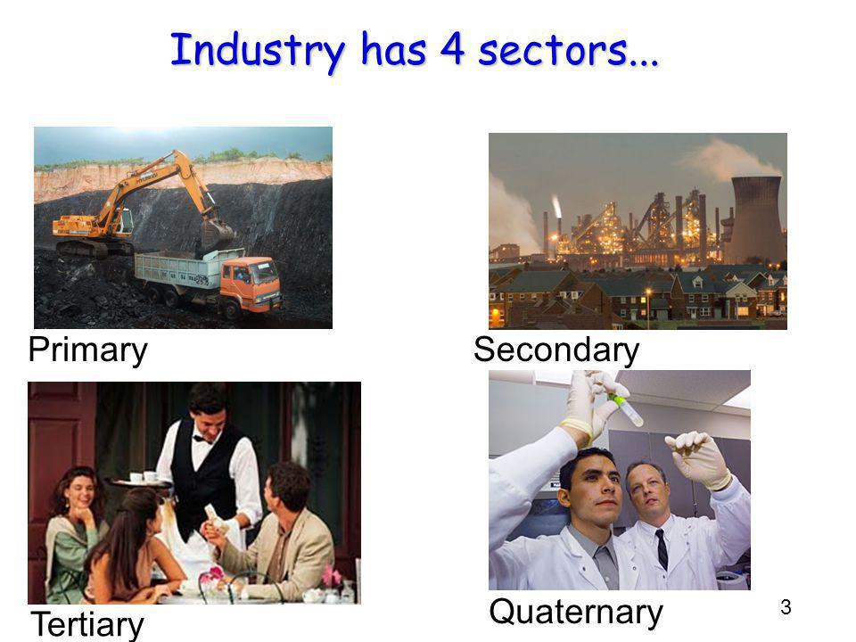
- Primere Sektor: Ontginning van grondstowwe bv: jag, visvang en bosbou.
- Sekondere sektor: Verwerking en vervaardiging bv: Nywerhede, konstruksie.
- Tersiere sektor: Voorsien dienste bv: onderwys, vullisverwedering en vervoer.
- Kwaternere sektor: Intellektuele aktiwiteite bv: Navorsing, tegnologie.
Die ekonomiese sektore se bydrae tot die Suid-Afrikaanse ekonomie:
2 maniere hoe die belangrikheid en waarde van die ekonomiese sektore die ekonomie meet:
- Werksgeleenthede- hoeveel mense werk het.
- BBP (bruto binnelandse produk)- Die totale waarde van die goedere en dienste wat jaarliks deur 'n land geproduseer word.
Die gebruik van statistiese en grafiese inligting:
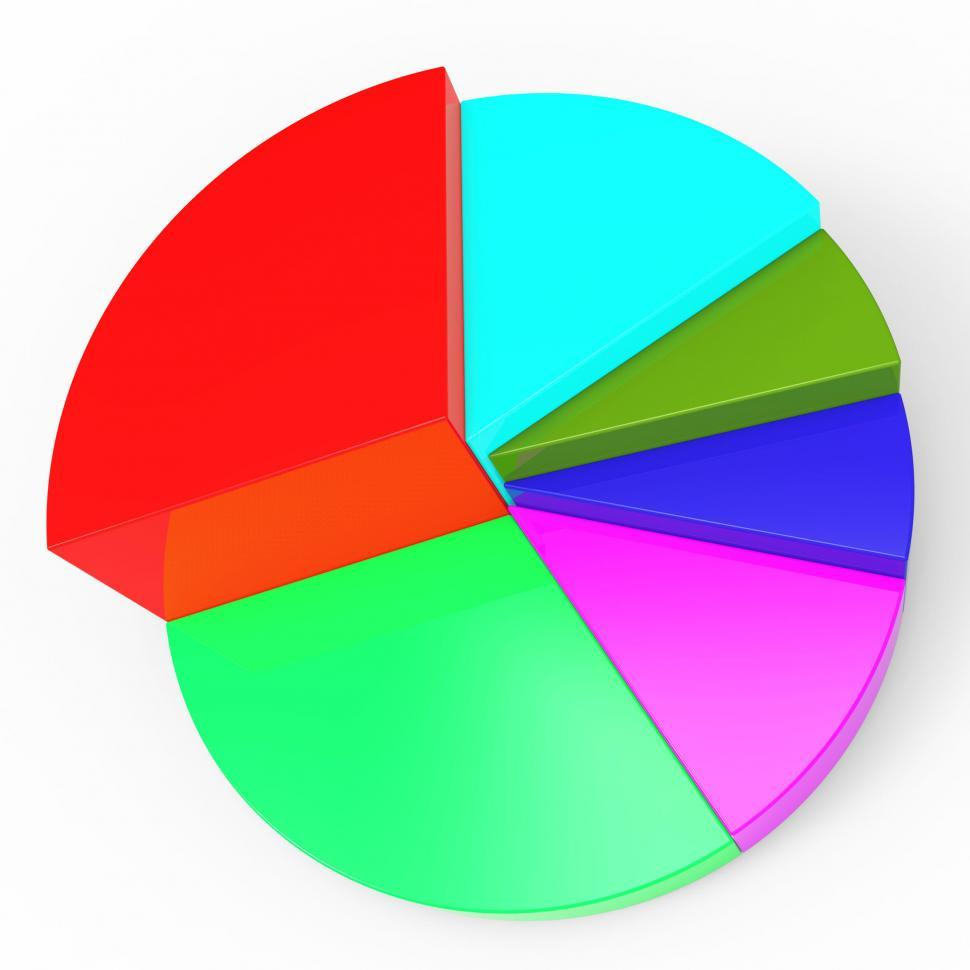
Waarom is statistiese inligting waardevol?
- Identifiseer sterk-en swakpunte van n land se ekonomie.
- Wys verandering oor tyd.
- befondsiing en toekimstige ontwikkeling van n provinsie te beplan.
HS2, Landbou:
Die bydrae van landbou tot die Suid-Afrikaanse ekonomie:
- Plaasprodukte voorsien grondstowwe vir nywerhede wat verdere werksverskaffing ondersteun.
- Landbou voorsien voedsel aan mense.
- Kommersiele boerdery dra by tot die land se BBP.
Kleinskaalse gemeenskapsboerdery:
|
||||||
|
Kleinskaalse kommersiele boerdery:
|
Kleinskaalse bestaansboerdery
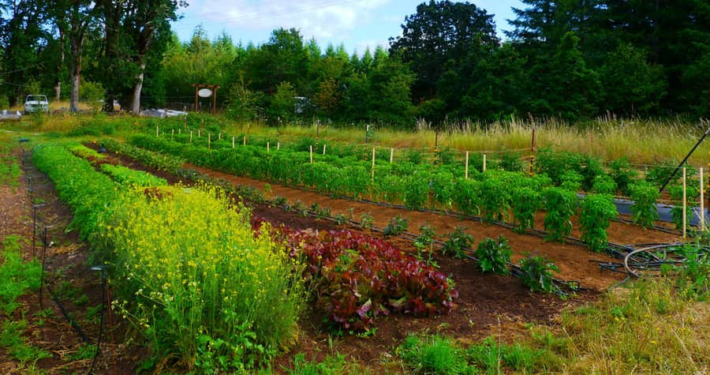 |
|||||
|
Waarom voorsien kleinskaalse gemeenskapsboerdery so min aan die mark?
|
|||||

Grootskaalse kommersiele boerdery:
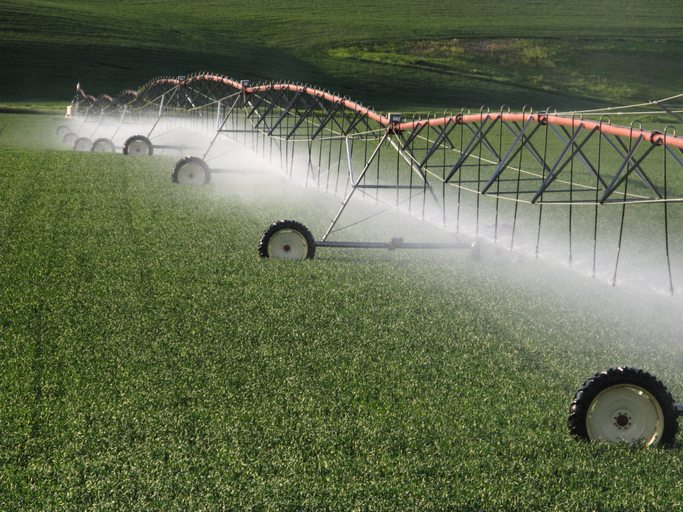
- Voorsien die meeste van die land se behoeftes.
Uitdagings van kommersiele boerdery:
- Toename van produksie koste weens die koste van saad, kunsmis, besproeiingswater en plaasarbied wat toeneem.
- Regeringshulp en subsidies is onttrek. Dit het daartoe gelei dat baie boere nie kan kompeteer teen boere in ander lande wat staatsubsidies kry en dan hul produkte op die Suid-Afrikaanse mark "dump".
Faktore wat landbou in Suid-Afrika bevorder en belemmer:
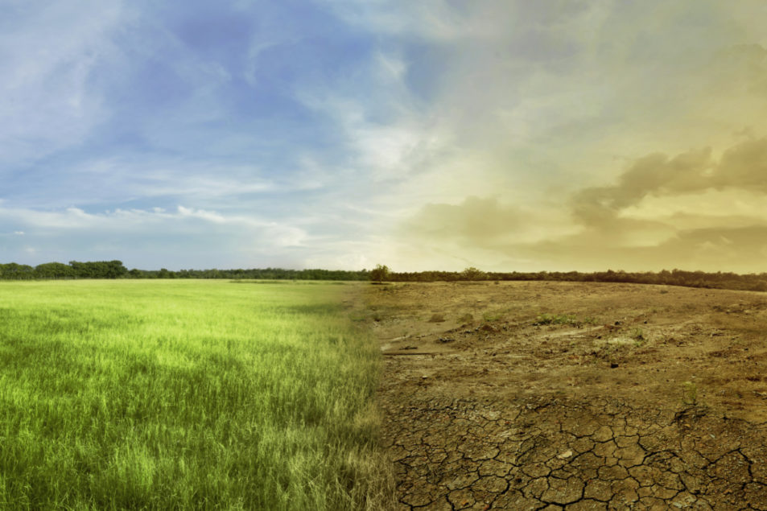
| Faktore wat landbou bevorder: | Faktore wat landbou belemmer: |
| Klimaatnavorsing- help boere om die geskikte gewasse te kies. | Reenval is onbetroubaar en droogtes is n konstante bedreiging. |
| Handel: uitvoer van produkte kan wins genereer. | Handel: Sommige boere verlaag opbrengs van produkte omdat dit goedkoper ingevoer kan word vanuit lande waar kostes goedkoper is om produkte te maak. |
| Lang groeiseisoen. | Gronderosie. |
| Plat grond. | Uitbraak van siektes. |
| Beskikbaarheid van Arbeid | Slegte boerderymetodes, soos oorgebruik van brandhout. |
Die belangrikheid van voedsesekeriteit in Suid-Afrika:
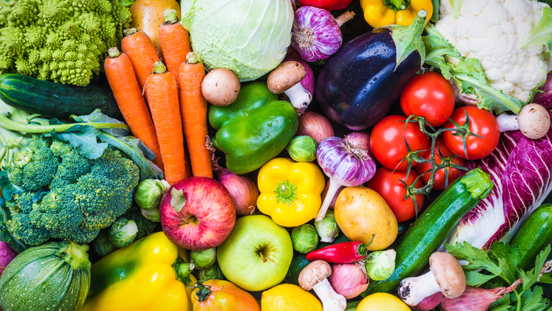
Voedselsekeriteit:
- Honger: om nie genoeg voedsel te eet nie
- Ondervoeding: tekort aan voldoende vitamiene, minerale en ander mikronutriente in voedsel.
- Voedselsekuriteit: Wanneer alle mense genoeg voedsel het om ‘n gesonde en produktiewe lewe te hê
- Voedselonsekuriteit: Wanneer alle mense nie genoeg voedsel het om ‘n gesonde en produk- tiewe lewe te hê nie
Nadelige faktore:
- Gebrek aan vrugbare grond
- Natuurlike rampe – droogtes
- Grondhervorming
- Armoede
- Styging in voedselpryse
Maatreels:
- Volhoubare landbou
- Reguleer voedselpryse
- Goeie landboutegnieke
- Verhoed gronderosie
- Stedelike voedseltuine
Mynbou
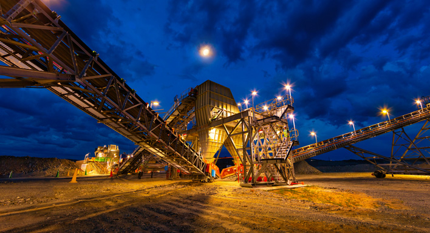
Bydrae van mynbou tot die ekonomie:
- Voorsien werksgeleenthede
- Stimuleer ander sektore van die ekonomie (landbou, handel ens.)
- Nuwe dorpe en infrastruktuur ontwikkel rondom myne.
- Verskaf grondstowwe aan nywerhede.
Belangrikheid van mynbou in die ontwikkeling van Suid-Afrika:
- Lok groot beleggings na SA.
- Lok immigrante na SA.
- Veroorsaak dat infrastruktuur ontwikkel
- Metale wat uitgevoer word, word gebruik om invoerprodukte te skep wat ons benodig. (bv.karre)
Faktore wat mynbou bevorder of belemmer:
Faktore wat mynbou bevorder:
- Groot mineraalreserwes
- SA het wye reeks minerale
- Hoe kwaliteit van minerale
- Steenkool is beskikbaar vir energie: Steenkoolhulpbronne word gebruik om elektrisiteit op te wek
- Regeringshulp is beskikbaar om kleinskaalse, onafhanklike mynwerkers te help om hulle myne veilig en winsgewend-en-wettig te bedryf
Faktore wat mynbou belemmer:
- Skommelings in randwisselkoerse: inkomste van minerale word bepaal deur veranderinge in randwisselkoerse
- Ondergrondse water is gevaarlik: werkers kan verdrink, om myne droog te pomp veroorsaak verhoging in bedryfskoste en omgewingskade aan die oppervlakte bokant die myne
- Protesaksies
- Stakings deur mynwerkers
- Hoe opleidingskoste
- Longsiektes
Sekondere en Tersiere sektore:
Die Sekondere sektor:
Massaproduksie: Die vervaardiging van groot hoeveelhede identiese artikels deur middel van standaard meganiese prosesse.
Soorte nywerhede:
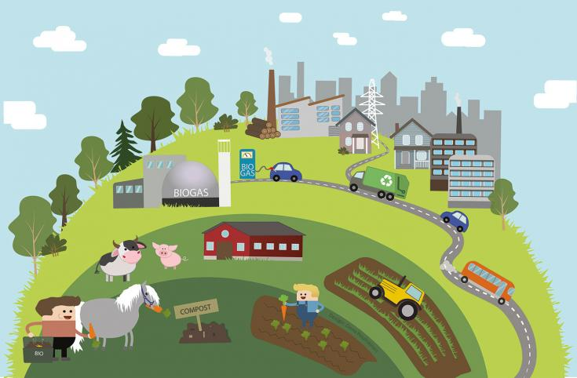
- gebruik groot hoeveelhede grondstowwe
- moontlikheid van baie afval en besoedeling
- vereis massavervoer
- vereis groot, oop ruimtes - gewoonlik aan die buitewyke van die stad
- bv. staalaanlegte, petro-chemikaliee
- vervaardig kleiner produkte
- veroorsaak min of geen besoedeling
- gelee in nywerheidsgebiede in die stad
- bv. klere, verpakte voedsel
- na aan bron van grondstowwe gelee
- produseer goedere en vermy agteruitgaan van grondstowwe
- opgerig waar vrag van een tipe vervoer na n ander oorgeplaas word, bv. by n hawe.
- nywerhede wat groot produkte vervaardig
- fabrieke word geplaas waar kopers is, bv. brood
- waar die nywerheid swaar of grootprodukte vervaardig of as dit te duur is om die produk te vervoer, dan moet die fabriek naby die mark gelee wees
- nywerhede wat nie tot n spesifieke ligging gebonde is nie
Swaar nywerhede:
Ligte nywerhede:
Gronstofgerigte nywerhede:
Oorbruggingsnywerhede:
Markgerigte nywerhede:
Ongebonde nywerhede:
Faktore wat nywerheisontwikkeling in SA beinvloed:
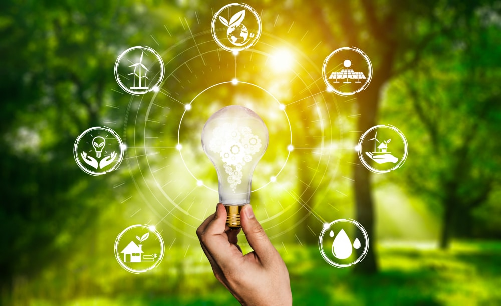
- SA ontgin n wye verskeidenheid minerale waarvan swaar nywerhede baie gebruik
- Landbou verskaf grondstowwe vir voedselvervaarding
- SA het groot steenkoolhulpbronne en dra by tot n lae koste van elektrisiteit
- Die meeste nywerhede het water nodig om te kan funksioneer en dorstige nywerhede kan net gelee wees waar goeie voorsiening van goedkoop water beskikbaar is
- Oprigting van n fabriek is duur. Nywerheidsontwikkeling sal in tye van ekonomiese depressie, wanneer kapitaal nie beskikbaar is nie, langsaam wees
- Sommige Nywerheidsontwikkelings benodig meer ruimte as ander.
Grondstowwe:
Energie:
Water:
Kapitaal:
Grond:
SA se hoof nywerheidsgebiede:
PWV- Pretoria-Witwatersrand-Vaalkompleks Hoofnywerhede word gekonsentreer in:- Gauteng(PWV)
- Durban-Pinetown(eThekwini)
- Port Elizabeth-Uitenhage(Nelson Mandela metropolitaanse streek)
- Suidwes-Kaap
Die PWV kompleks in Gauteng:

Faktore wat die ligging en ontwikkeling van vervaardiging in hierdie gebied beinvloed:
- Goud: die streek het ontwikkel tot die grootste nywerheidskomleks in Afrika weens die goud in die streek
- Mense: Baie mense het wereldwyd na die gebied gekom en was avontuurlustig en bereid om hard te werk
- Energie: myne verskaf steenkool aan die termiese kragstasies
- Markte: vinniggroeiende bevolking verskaf n mark vir n wye verskeidenheid nywerhede
- Arbeid: beskikbaarheid van arbeidsmag- geskoold en ongeskoold
- Water: alle myne, fabrieke en woongebiede het water nodig. So ook die plase wat ontwikkkel is om voedsel aan die snelgroeiende myndorpe te voorsien
- Grondstowwe: grondstowwe word deur die fabrieke in die PWV benodig en is naby die gebied beskikbaar
- Vervoer: vervoer van masjinerie en boumateriaal is noodsaaklik
- Kapitaal: die ontstaan van die honderde myne en fabrieke het massiewe bydrae geld vereis
Die eThekwini-metropolitaanse gebied (Durban-Pinetown)
Faktore wat die ontwikkeling van vervaardiging in hierdie gebied beinvloed:
- Ligging van hawe: Die gebied is naby n natuurlike hawe wat handel, vervoer en vervaardiging makliker maak
- Arbeid: Daar is baie mense in die omgewing asook werksgeleenthede
- Hulpbronne: KZN het n warm, vogtige klimaat em ingevoerde hulpbronne is hier meer toegangklik as in die PWV
- Water: KZN het n hoe reenvalstreek
- Energie: KZN het steenkool reserwes wat gebruik word om krag mee op te wek
- Relief: kusvlakte is plat en is geskik vir groot fabrieke
- Markte: vervaardigers vervoer produkte aan wereldwye markte
Die Suidwes-Kaapgebied
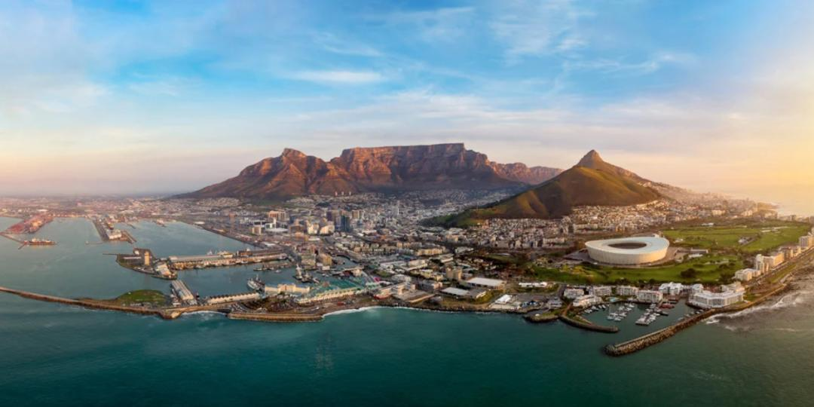
Faktore wat Nywerheidsontwikkeling in hierdie gebied beinvloed:
- Geskiedenis: koloniale regering het die stad n vroee voorsprong gegee en behoeftes aan vervaardigde goedere is voorsien
- Arbeid: Die stad het n vinige groeikoers en sodoende werksgeleenthede
- Grondstowwe: Die omliggende gebied produseer basiese vervaardigde goedere omdat die gebied beskik is oor min minerale wat vervaardigde goedere beperk
- Water: Waterhulpbronne is beperk omdat daar min jaarlikse reenval en seisoenale riviere is. Die agterland(gebied anderkant n seehawe) het hoer reenval en voldoende water
- Energie: steenkoolvelde is naby aan gebied gelee. Hidroelek is nie algemeen nie weens lae reenval
- Vervoer: Kaapstad het n belangrike kusroete vir internasionale handel. Daar is vinnige spoorweg- en padverbindings tussen belangrike dele van SA
- Markte: Hoe toeriste bedryf, Kaapstad is beskik oor n nasionale mark waarmee dit doeltreffend verbind is
Die Nelson Mandela-metropolitaanse gebied (die PE-Uitenhage-gebied)
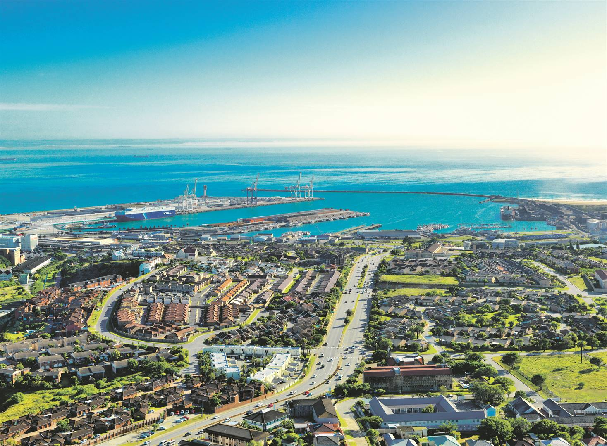
Faktore wat vervaardiging in hierdie gebied beinvloed
- ligging: Baie motorvervaardigers is in PE. Ligging word benadeel omdat dit nie meer as n sentrale afbrekingspunt beskou word nie
- Water: Meer as genoeg voorsiening vir water, hoofverskaffer van water in die gebied is die Oranjerivierprojek
- Hawefasiliteite: Hawe is diep genoeg vir groot skepe
- Gelykgestelde spoortariewe: vervoerkoste van houers vanaf PE na Gauteng is gelyk gestel aan die vervoerkoste van houers vanaf Durban na Gauteng, wat n korter pad is
- Arbeid: Lae arbeidskoste geproduseerde produkte is goekoper as invoerprodukte
- Die Coega-projek: n nuwe metaalverwerkingsaanleg en olieraffinadery
- Arbeidskoste: Laer in vergelyking met die res van SA, maar hoer as in Asie en Oos-Europa
- Stakings: beskadig die beeld van die gebied as n betroubare verskaffer
Strategiee vir Nywerheidsontwikkeling
Nywerheidsontwikkelingsstrategiee gedurende apartheid:
Sedert die 1960's het die apartheidsregering die volgende doelwitte gehad:- Werkskepping in of rondom tuislande
- Arm gedeeltes van SA te help om ekonomies te ontwikkel deur die oprigting van fabrieke
- Om die blanke SA te definieer as apart van die res van die tuislande
- Nywerheidsontwikkelingspunte: een van die doelwitte van die regering was om Nywerheidsontwikkeling te desentraliseer deur swart nasionale state buite die hoofsentrums te skep
- Dekonsentrasiepunte: Nywerheidsontwikkelinggebiede buite die hoofsentrums
- metropolitaanse gebiede: bestaande stadsgebied wat reeds vir privaat ondernemings aantreklik was weens die geografiese voordele daarvan
Post-apartheidsontwikkelingstrategiee:
- HOP(Heropbou- en Ontwikkelingsprogram): Deur ANC vervang. het die volgende sukses bereik:
- verbeterde watervoorraadtoevoer aan landelike dorpe
- nuwe werksgeleenthede
- nuwe huise verskaf
- Die GEAR strategie: (GEAR: Growth, Employment an Redistribution) van 1969-2003 se doelwitte was:
- Privaatsektoe uit te brei
- uitset uit te brei
- belegging te verminder
- handel aan te moedig Dit het daarin geslaag om buitelandse beleggings te lok en die vraag na SA produkte verhoog. Dit het daarin misluk om armoede en werkloosheid te verminder. BEE het GEAR vervang.
- Die BEE beleid(Black Economic Empowerment): Doel is om ongelykhede reg te stel deur ekonomiese geleenthede te gee aan benadeelde groepe
- BEE het baie min voorheen benadeelde persone verryk en het nie rykdom en bekwaamheid aan die meerderheid versprei nie
- BEE dwig sakeondernemings om ras en sosiale agtergrond van enige potensiele aansoeker in ag te neem in plaas van hul kwalifikasies en ondervinding. Dit lei tot n stelsel was ras die oorwegende faktor is om iemand aan diens te neem
- BEE het n uitvloei van kundigheid veroorsaak. Gekwalifiseerde mense met ondervinding en kundigheid emigreer
- BBBEE(Broad-based Black Economic Empowerment) ingestel as teenvoeter vir sommige van die punte van kritiek teen BEE. BBBEE spesifiseer kodes van goeie praktyk om voldoening aan BEE in alle sektore van die ekonomie te meet
Die konsep van Nywerheidsontwikkelingsones(NOS'e) en die verspreiding daarvan:
Nywerheidsontwikkelingsones:
NOS'e is Industriele ontwikkelings wat naby hawens en lughawes gebou word met die doel om beleggers te lok, meer kompeterend te wees en vervoer en dienste makliker te maak.
NOS'e verskaf:
- Werksgeleenthede
- Verbeterde infrastraktuur
- Beter dienslewering
- Dra by tot plaaslike ekonomie
- Die vermenigvuldigingseffek
Ruimtelike Ontwikkelingsinisiatiewe (ROI'e):
- n ROI is n program wat n reeks ontwikkelingskorridors wat regdeur SA en ook na buurlande strek, voorstel en ondersteun
- die doel van ROI's is:
- om bestaande vervoerinfrastrakture te ontwikkel en verbeter
- om ekonomiese aktiwiteite langs vervoerkorridors voor te stel en te ondersteun
- om n aantreklike omgewing vir privaatsektorbelegging te skep
Kwessies wat met nywerheidsentralisasie en -desentralisasie verband hou:
die tradisie van gesentraliseerde nywerhede:
nywerhede was gesentraliseerd(saamgevoeg by n sentrale plek) en het 2 probleme veroorsaak:- mense in landelike gebiede kon nie dieselfde poste in fabrieke kry nie, wat meer betalend is nie
- die migrasie van landelike woners het woners in stedelike nedersettings gepla
- vier hoosgsontwikkelde kernnywerheidsgebiede
- soortgelyke nywerhede is bevoordeel
- goeie infrastraktuur is ontwikkel
- landelike gebiede en voormalige tuislande afgeskeep en swak ontwikkel
- opeenhoping en degradasie in ontwikkelde kerngebiede
- oorbewoning en maatskaplike probleme
- druk op skaars hulpbronne
Die informele sektor:
Eienskappe van die informele sektor:
- Gebrek aan toegang tot finansiele dienste soos krediet
- selfwerksaam
- Winsgrense is laag
- Inkomste is laag en onseker, en werksure lank
- Meestal ongeskoolde of halfgeskoolde werkers
- Kleinskaalse dienste wat meestal op straat verskaf word
- Baie probleme: rommel, onhigieniese omgewings, stedelike verval.
Redes vir hoe werksverskaffing in die informele sektor in SA:
- Onvoldoende opleiding en lae geletterheidvlak beteken dat mense uit landelike gebiede na stede en dorpe kom, nie toegerus is om die arbeidsmark te betree nie
- Verstedeliking: nuwe aankomelinge in dorpe en stede verhoog die beskikbare werksgeleenthede
Uitdagings wat die informele sektor in SA in die gesig staar:
- onbetroubare inkomste
- Handelaars in die informele sektor het nie toegang tot krediet nie
- Om besighede tot die volgende vlak te ontwikkel, moet handelaars lisensies kry en opleiding ondergaan
Landelike en Stedelike nedersettings:

Nedersetting
'n Plek waar 'n groep mense woon. Dit bestaan uit geboue, infrastraktuur en maatskaplike en ekonomiese bedrywighede.
Standplaas
Die stuk grond waar die nedersetting ontwikkel.
Faktore wat die standplaas van 'n nedersetting beinvloed
Relief
Hoog genoeg om teen oorstromings beskerm te wees, laag genoeg om teen die wind beskut te wees.
Verdediging
Heuweltop of binnekant van rivierkronkel bied beskerming.
Hulpbronne
Hout of klip benodig vir bouwerk.
Vervoer
Standplaas by 'n kruispad, rivier of kus maak toegang tot ander toegang tot ander plekke makliker.
Brandstof
Hout nodig om kos te maak.
Grond
Diep, vrugbare grond vergemaklik boerdery.
Die ligging van 'n nedersetting
ligging
Die posisie van 'n nedersetting in verhouding tot sy omgewing. Dit verwys na die afstand na die naaste dorp/stad vir basiese behoeftes soos skole, kerke, water ens.
Grootte en kompleksiteit: Klein na Groot
- Afgesonderde plaasopstal; kleinste, Primere aktiwiteite.
- Gehuggie; los groepering van 'n paar plaasopstalle.
- Dorpie; 'n digter groepering van baie plaasopstalle bestaande uit Primere aktiwiteite.
- Dorp; 'n digbevolkte, lae orde funksionele stedelike gebied, meer ingewikkelde infrastraktuur en verskillende ekonomiese aktiwiteite.
- Stad; 'n groot stedelike gebied waar baie mense woon en werk.
- Metropool; 'n hoofstad in 'n streek, omring deur afhanklike dorpe.
- Konurbasie; 'n groot stedelike gebied met die groei van ander omliggende dorpe en stede.
- Megalopool; Reusagtige gebied met Konurbasies wat saam smelt.
Verskille tussen Landelike en stedelike nedersettings
Landelike nedersettings
'n Klein nedersetting met 'n klein bevolking wat betrokke is by die Primere aktiwiteite bv. boerdery, visvang, mynbou en bosbou. Dit is ook Enkelfunksioneel.
Stedelike nedersettings
'n Groot nedersetting met 'n groot bevolking wat betrokke is by Sekondere, Tersiere en Kwaternere aktiwiteite. Dit is ook Multi-funksioneel.
Patroon
Kern Patroon van landelike nedersettings
Voordele
- Meer interaksies met mense.
- Veiliger weens meer mense.
- Kan deel in idees om probleme op te los.
- Kan goedere verdeel.
Nadele
- Minder privaatheid.
- Argumente weens probleme kan ontstaan.
- Moet winste verdeel.
- Kan nie goedere gebruik soos jy wil nie.
Verspreide patroon van landelike nedersettings
Voordele
- Meer privaatheid.
- Selfbesluitneming.
- Deel nie wins nie.
- Beter gebruik van goedere.
Nadele
- Nie voldoende onteraksies met mense nie.
- Kan onveilig wees.
- Moet alle kostes self betaal.
- Probleemoplossing kan moeilik wees.
Vorm
- Linieer.
- T-vormig.
- Sirkelvormig.
- kruispad.
Landelike Ontvolking
Die migrasie van mense vanaf die lanelike gemeenskappe na die stedelike gebiede. (Landelike-Stedelike migrasie)
Stoot faktore
- Meganisasie.
- Lae salarisse.
- Droogtes.
- Werkloosheid.
Trek Faktore
- Beter werk.
- Beter huise.
- Hoer salarisse.
- Beter mediese toestande.
Gevolge van Landelike Ontvolking
- Lee Plaashuise.
- Min nuwe beleggings.
- Werkloosheid.
- Misdaad.
Wat kan gedoen word?
- Adverteer Dorp.
- Goedkoop Nywerheidsgebiede.
- Toerisme.
- Skep werksgeleenthede.
Faktore wat die standplaas van 'n nedersetting beinvloed
- Fisiese Faktore; Water, vrugbare grond, veiligheid.
- Ekonomiese Faktore; minerale.
- Handels en Vervoer Faktore; Natuurlike hawens.
- Kulturele en maatskaplike Faktore; Nuwe dorpe is gebou buite bestaande nedersettings wat oorlaai, besoedel en oorbevolk kan wees.
- Politieke Faktore; Regeringsbeleide soos kommunismme.
- Historiese Faktore; Verdedigingsfaktore.
Stedelike Nedersettings
Verstedeliking; Die proses waardeur 'n toenemende deel van 'n land se bevolking in stedelike gebiede gekonsentreer word.
Stedelike groei; 'n toename aan die aantal mense wat in stedelike gebiede woon.
Vlak van Verstedeliking; Die aantal mense wat in stedelike gebiede woon, uitgedruk in 'n persentasie van die totale bevolking.
Koers van verstedeliking; Die pas waarteen verstedeliking plaasvind.
Posisie; Waar 'n plek gelee is.
Stadspreiding; Die uitbreiding van stedelike gebiede na omliggende gebiede.
Lae-Orde sentrums; Kleiner nedersettings. bv 'n plattelandse dorp.
Laer-Orde-Funksies en dienste; Goedere en dienste wat daagliks benodig word en deur mense gebruik word.
Hoe-Orde sentrums; Groot nedersettings, bv 'n Stad.
Hoer-Orde-Funksies en dienste; Goedere en dienste wat gespesialiseerd is en deur minder mense gebruik word.
Sentrale Plek; 'n Stedelike nedersetting wat goedere en dienste voorsien aan die omliggende bevolking.
Drempelbevolking; Die minimum getal mense wat nodig is om 'n sakeonderneming te ondersteun.
Invloedsfeer; Die gebied waaruit 'n sakeonderneming sy klante lok.
Reikwydte van goedere; Die maks afstand wat 'n klant gewillig is om te reis om iets by 'n sentrale plek te koop.
Pendel; Om daagliks van jou werk toe te ry en weer terug.
Voorstede; Deel van 'n dorp of stad, weg van die SSK (Sentrale Sake Kern) waar mense woon.
Desentralisasie; Die beweging van mense en akt. uit die stadskern na die voorstede en landelik-stedelike randgebied.
Informele Handel; Die verkoop van goedere op die sypaadjie, sake wat buite die formele sektor van die ekonomie bedryf word.
Globalisering; Die tendens van lande dwarsdeur die wereld om beter met mekaar te verbind en eenders te word.
Trekarbeiding; Mense wat van landelike gebiede en aangresende lande migreer om werk te soek in die stedelike gebiede.
Sentripetale (krag); Krag wat voorwerpe na binne, na 'n middelpunt laat beweeg.
Sentrifugale (krag); Krag wat voorwerpe na buite, weg van 'n middelpunt laat beweeg.
Fasadisme; Wanneer die ou, oorspronklike voorkant of fasade van 'n gebou behou en 'n nuwe ontwikkeling agter die ou fasade gebou word.
Gentrifikasie/chelseafikasie; Die modernisering en verbetering van ou huise naby die stadskern.
Ghetto; Klein gebied binne 'n stedelike nedersetting waar mense van 'n spesifieke etniese of kultuurgroep saam woon.
Infrastraktuur; Fasiliteite en dienste soos kragvoorsiening, water, vervoer en kommunikasie.
Faktore wat die posisie van stedelike nedersettings beinvloed
- Fisiese omgewing soos klimaat, Relief, dreinering.
- Sosiale faktore soos taal en kultuur.
- politiek, kommunismme.
- ekonomiese faktore, handelroetes en beskikbaarheid van hulpbronne.
Soorte nedersettings
- Sentrale plekke; nedersettings wat omliggende omgeing voorsien.
- Handels en vervoer voorstede; Nedersettings gestig vir handel en vervoer.
- Vragverbreukingspunte; Nedersettings waar verandering in vervoer plaasvind.
- Gespesialiseerde Stede; Dorpe en stede wat in 'n spesifieke akt. spesialiseer bv. toerisme.
- Aansluitingsdorpe; Steddelike nedersettings wat ontwikkel by belangrike vervoeraansluitings soos rivieroorgange.
- Poortdorpe; Stedelike nedersettings wat by 'n fisiese gaping ontstaan bv. 'n bergreeks.
Stedelike Hierargiee
Sentraleplekteorie
- Mense wil gerief en die goedkoopste prys he wanneer hulle iets koop.
- sakeonderneming poog om winste te vergoot deur die meeste klante te lok.
- Afstand beteken reiskoste, dus probeer verbruikers om reiskoste te verminder wanneer hulle iets koop.
Stedelike strukture en patrone
Grondgebruiksones en die stedelike profiel
- Sentrale sake kern. Die hart van die stad, waar sake gehandel word, probleem besoedel.
- oorgangsone. rondom SSK, kommersiele nywerhede...
- residensieel. Gebiede in die stad waar mense woon, hoe digtheid.
- voorstedelike inkopiesentrum. sakesentrums met tuine en parkering, weg van die SSK.
- Industriele gebiede.Ver vanaf SSK, hoe inkomstewoongebiede, maar binne die stedelike nedersetting.
- landelik-stedelik randgebied. Gebiede buite die stad bv. golfbane. Soos wat stad uitbrei, word dit omring deur die stad.
Modelle van stedelike struktuur
- Veelkernmodel; Gebaseer op die idee dat stede meer as een sentrum het.
- Moderne Amerikaanse-Westerse stad; Meeste burgers woon in groot stede, Afhanklik van vervoer: Weens die skeiding van tuiste. Desentralisasie: Weens ninne-stedelike probleme, was daar 'n beweging van mense en funksies uit die SSK na sentrums in die voorstede.
- Die Derdewereld stad; ontwikkellende lande, Geskiedenis bv. kolionalisme het maatskaplike groepering vertoon.